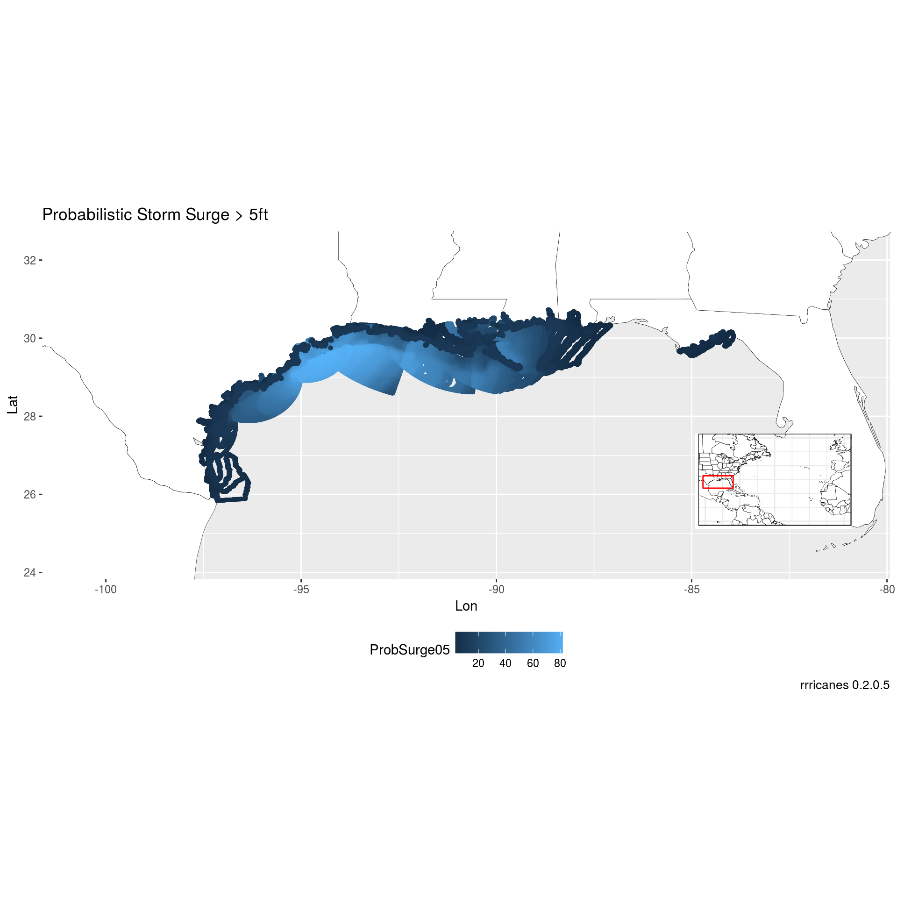

library(dplyr)
library(ggplot2)
library(rrricanes)
library(sp)key <- "AL092008"
adv <- 42fstadv <- load_storm_data("fstadv") %>% filter(Key == key, Adv <= adv)## Parsed with column specification:
## cols(
## .default = col_integer(),
## Status = col_character(),
## Name = col_character(),
## Date = col_datetime(format = ""),
## Key = col_character(),
## Lat = col_double(),
## Lon = col_double(),
## Pressure = col_double(),
## Hr12FcstDate = col_datetime(format = ""),
## Hr12Lat = col_double(),
## Hr12Lon = col_double(),
## Hr24FcstDate = col_datetime(format = ""),
## Hr24Lat = col_double(),
## Hr24Lon = col_double(),
## Hr36FcstDate = col_datetime(format = ""),
## Hr36Lat = col_double(),
## Hr36Lon = col_double(),
## Hr48FcstDate = col_datetime(format = ""),
## Hr48Lat = col_double(),
## Hr48Lon = col_double(),
## Hr48NE34 = col_character()
## # ... with 20 more columns
## )## See spec(...) for full column specifications.Calculate the last date/time of forecast/advisory product and subtract 3 hrs
dt <- (last(fstadv$Date) - (60 * 60 * 3)) %>%
strftime(format = "%Y%m%d%H", tz = "UTC")Wrap gis_download in safely. Not all products will exist for every storm or even every advisory.
I’m downloading the psurge products for 5 feet since there are no other storm surge products available for Ike.
dl <- purrr::safely(.f = gis_download)
gis_surge <- gis_prob_storm_surge(key, products = list("psurge" = c(5)),
datetime = dt) %>% dl()## OGR data source with driver: ESRI Shapefile
## Source: "/tmp/RtmpHGgjNf", layer: "al092008_2008091112_gt5"
## with 83 features
## It has 2 fieldsif (!is.null(gis_surge$error))
message(gis_surge$error)Generate a base plot of the Atlantic ocean.
bp <- al_tracking_chart(color = "black", fill = "white", size = 0.1, res = 50)## Regions defined for each Polygons
## Regions defined for each PolygonsSince we’re dealing with a polygon shapefile, we can get the bounding box of the dataset.
bbox <- bbox(gis_surge$result$al092008_2008091112_gt5)Add a little cushion for the map inset.
lat_min <- bbox[2,1] - 2
lat_max <- bbox[2,2] + 2
lon_min <- bbox[1,1] - 4
lon_max <- bbox[1,2] + 4Build a map inset.
bp_inset <- ggplotGrob(bp +
geom_rect(mapping = aes(xmin = lon_min, xmax = lon_max,
ymin = lat_min, ymax = lat_max),
color = "red", alpha = 0) +
theme_bw() +
theme(axis.title = element_blank(),
axis.ticks = element_blank(),
axis.text.x = element_blank(),
axis.text.y = element_blank(),
plot.margin = margin(0, 0, 0, 0, "pt")))Modify original bp zoomed in on our area of interest.
bp <- bp +
coord_equal(xlim = c(lon_min, lon_max),
ylim = c(lat_min, lat_max)) +
scale_x_continuous(expand = c(0, 0)) +
scale_y_continuous(expand = c(0, 0)) +
labs(x = "Lon",
y = "Lat",
caption = sprintf("rrricanes %s", packageVersion("rrricanes")))Combine bp and bp_inset to finalize initial base plot. bp will be a base plot without the inset. bpi will have the inset.
bpi <- bp + annotation_custom(grob = bp_inset, xmin = lon_max - 5,
xmax = lon_max - 1, ymin = -Inf,
ymax = lat_min + 5)Convert the SpatialPolygonsDataframe to a dataframe.
shp_storm_surge <- shp_to_df(gis_surge$result$al092008_2008091112_gt5) Probability of storm surge greater than five feet.
bpi + geom_point(data = shp_storm_surge,
aes(x = long, y = lat, color = ProbSurge05), size = 1) +
theme(legend.position = "bottom",
legend.box = "vertical") +
labs(title = "Probabilistic Storm Surge > 5ft",
caption = sprintf("rrricanes %s", packageVersion("rrricanes")))